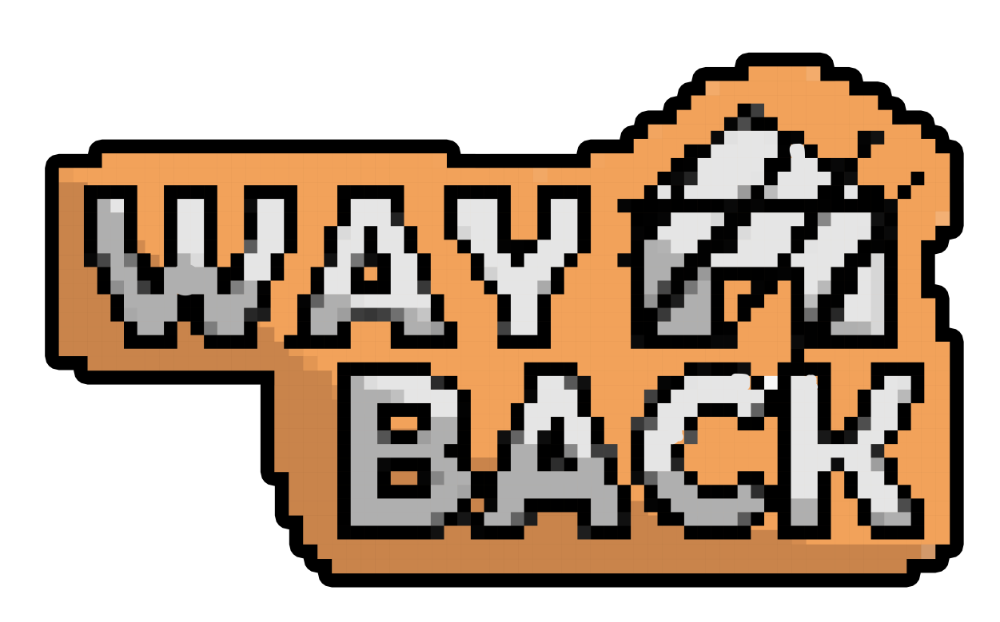

Seorang pelajar yang sejak kecil suka dengan dunia teknologi, akhirnya terjun ke dunia pemrograman dan sekarang terjun di jurang penyesalan. menyedihkan bukan?
Hubungi SayaSeorang remaja kelahiran 28 Oktober 2008, gemar bermain game dan antusias pada dunia teknologi. Bersekolah di SMKN 1 Surabaya dengan jurusan Rekayasa Perangkat Lunak, saya bertekad menjadi pengembang perangkat lunak yang handal dengan menggabungkan hobinya dengan keterampilan yang dipelajari di sekolah.
Secara umum, saya belum benar benar bisa coding, namun saya mungkin sedikit bisa menggunakan aplikasi atau software ini.
Merupakan game Indie berbasis Scratch3 buatan K.O.N.Z, bertemakan dunia fantasi gabungan antara era dinosaurus dan era magis.
